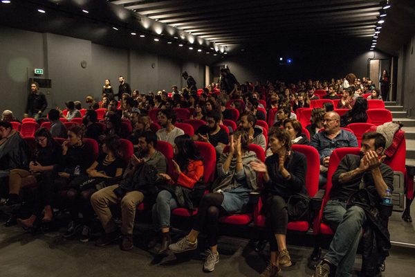

54. Ulusal Yarışma - Kar
54. Ulusal Yarışma'da dördüncü günün programında aslında bir "Antalya" filmi olan Emre Erdoğdu'nun ilk uzun metrajlı filmi olan Kar filmi izlendi. Başrollerini Hazar Ergüçlü, Ozan Uygun, Halil İbrahim Babür ve Doğaç Yıldız’ın paylaştığı Kar da Ulusal Yarışma'da gösterilen diğer filmler gibi izleyicinin yoğun ilgisi ve beğenisiyle karşılandı. Film ekibinin katıldığı Beyoğlu Sineması'ndaki gösterimin ardı ndan Melis Behlil moderatörlüğünde söyleş i yapıldı.
Gösterim öncesinde gerçekleşen söyleşide Erdoğru, Antalya'da geçen filmin Antalya Film Fonu desteğiyle çekildiğini; Türkiye prömiyerini Antalya Film Festivali'nde yapmayı umduklarını ancak ulusal yarışmanın iptaliyle bu imkanı yitirdiklerini açıkladı. Filmin başlangıcında görülen Antalya Film Festivali logosu, izleyiciler tarafından kahkahalarla karşılandı.
Kar'ın ana karakteri Müzeyyen, toplumsal ahlak çizgisinin altında yaşayan genç bir kadındır. Kavgaya, uyuşturucuya bezenmiş hayatını kendine benzeyen arkadaşlarıyla paylaşıyordur. Kardeşi Ali onun varlığını yeni öğrenmiş, onunla t anışmaya Bolu’dan kendi burjuva, başarılı eğitim hayatını yarıda bırakıp Antalya’ya gelmiştir. Meşru çocuk Ali sınanmadığı günahlarla, gayr-i meşru çocuk Müzeyyen ise Ali’nin getirdiği umutla imtihan olacaktır.
